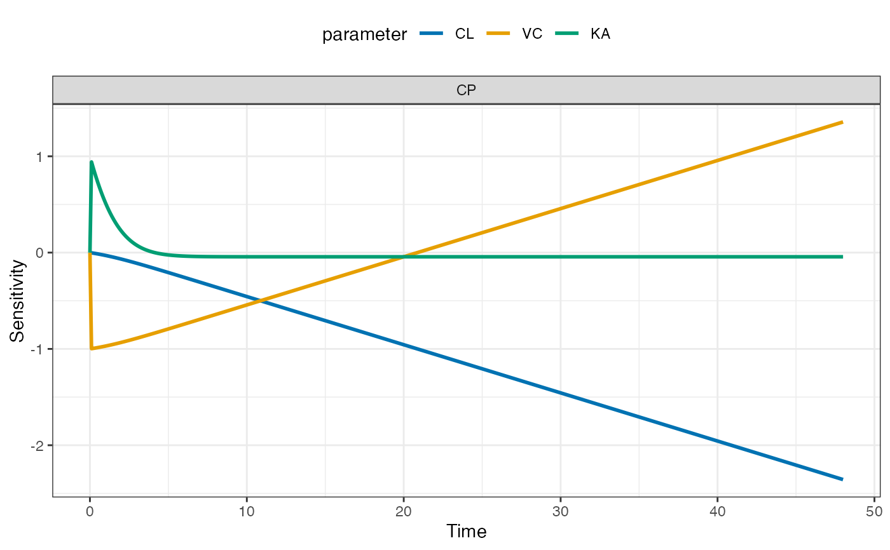

Perform local sensitivity analysis
Arguments
- mod
a mrgsolve model object.
- par
parameter names as character vector or comma-separated string.
- var
output names (compartment or capture) as character vector or comma-separated string.
- fun
a function for generating simulated output for sensitivity analysis (see details).
- eps
parameter change value for sensitivity analysis.
- ...
passed to
plot.lsa().- x
output from
lsa().
Examples
mod <- mrgsolve::house(delta = 0.1, end = 48)
par <- "CL,VC,KA"
var <- "CP"
dose <- ev(amt = 100)
fun <- function(mod, ...) mrgsolve::mrgsim_e(mod, dose, output = "df")
out <- lsa(mod, par, var, events = dose)
head(out)
#> # A tibble: 6 × 5
#> time dv_name dv_value p_name sens
#> <dbl> <chr> <dbl> <chr> <dbl>
#> 1 0 CP 0 CL 0
#> 2 0 CP 0 CL 0
#> 3 0.1 CP 0.564 CL -0.00255
#> 4 0.2 CP 1.06 CL -0.00519
#> 5 0.3 CP 1.50 CL -0.00793
#> 6 0.4 CP 1.89 CL -0.0108
lsa_plot(out)
